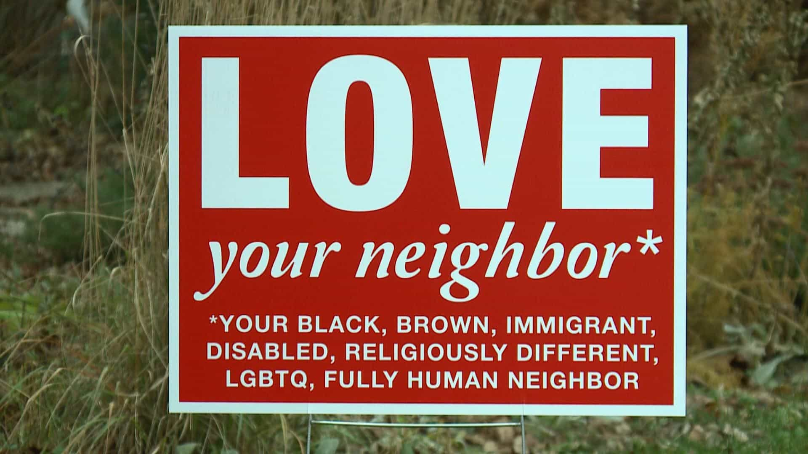

PREVIOUSLY: 7 Things A Man Must Never Do
It’s incredibly difficult to discern universal moral standards, especially those who are shared by religious and non-religious men alike. Not everyone agrees about everything, for one reason or another. It could concern drugs, hurting animals for other purposes than eating them, or simply casual sex. Some even suggest that the very idea of contemporary ethics is just a means to keep modern males in check.
Be that as it may, we can still share our values, beliefs, and experiences in order to find common ground or simply put forward different perspectives that enrich our way of thinking and acting. My angle here is to give examples of things that I have said no to in life.
1. Group sex (with other men involved)
Guys who are active, partying, drinking, having a couple of semi-disrupted male friends or even some mild forms of those psychopathic traits themselves, tend to be occasionally involved in situations which may include various constellations of group sex.
While it’s fine to under some conditions make out or even fornicate in the same room as a male friend or acquaintance (in the North we have the infamous ferries between Sweden and Finland where debauchery in the cabins is not uncommon), I find the whole idea of sharing a girl with another guy despicable.
Therefore I have politely said no to such suggestions whenever they have (rarely) been conveyed. The closest is perhaps the pump-and-dump and sharing process associated with being buksvåger.
2. Hard drugs
Drugs and narcotics are two real moral minefields. A complete consensus between men is highly unlikely, given the multiple historical, scientific, spiritual, legal and individual aspects that affect them in regard to such matters.
Distinguishing between “natural” and “unnatural” drugs is hardly of any help. Some natural stuff can be quite toxic, whereas for example most synthetic sleeping pills in moderate doses and for short term use appear as low risk and perfectly reasonable to consume.
Yet, common sense and social norms have told me to stay away from hard and toxic stuff like LSD, heroin, PCP, crack and other junkie drugs. In my 20s I was a bit (((open-minded))) when I was drinking alcohol and some fellow cared to share, but I’ve always tried to make certain rules and avoid hard drugs.
3. Anabolic steroids
Despite of being involved in fitness and bodybuilding for many years, I have never been offered anything at a gym environment or by a bro. However, given that a person is interested in using some type of performance-enhancing substance it’s not hard to find a dealer, whether online or offline.
After weighing the totality of pros and cons (financial, physical, legal and mental), combined with having sort of a general “never cheat” mentality, I have decided to not juice it up. Perhaps you should do too.
4. Fuck fatties
I have rather early in life come to the conclusion that sleeping with a ham beast will bring a net loss to your internal well-being, hence I have avoided it at all cost.
The actual sex act itself and memories of such a mischief are likely horrendous, but adding to the fact that you have let yourself sink that low is probably even more regrettable and discomforting, and will further pour salt on the wound.
5. Have a gay friend
We all know that prejudices often turn out to be predominantly true, especially if they are backed by facts and reason. Most homosexuals that I have come across in real life have turned out to be neurotic at best and promiscuous STD-spreading junk people at worst. The most intelligent and sophisticated ones are probably only very good at hiding what they are doing during their vacations.
After never had any gay friend throughout life, due to my prejudices and instinctual homophobia, I feel that I absolutely miss – nothing at all. Leave some stones unturned.
6. Be nice to annoying people

Personally, I am fairly kind and polite to almost all people. For instance, at my mother’s former work there’s a lightly retarded female (supported by governmental handouts) whom I am friends with on social media. She likes almost every goddamn photo or text message that I happen to disseminate, but never bothers me the slightest. Thus I have absolutely no reason for not seeing her as a harmless and even slightly sympathetic person. The same goes for people who have different opinions than me.
But that’s where I draw the line. If an individual, for whatever reason, completely lacks appropriate social skills and annoys me with text messages, phone calls, doorbell ringing or whatnot I will not tolerate that for more than a second after the first few evasive attempts.
It might be that I am simply less agreeable than the average cuck or female philanthrope, but my level of toleration for the annoying organisms on earth is fairly low.
7. Let other guys run you over

On the bully spectrum I was closer to the bullies than the victims in elementary school, but there were always a couple of guys that you had to fight back or earn their respect before they stopped. In high school there were never such problems by any side where I was living, besides from the senior soccer team in which some of the older guys believed that they could say and do whatever they wanted. The team leaders did even support them.
While a little bit of rough jargon and informal hierarchies are okay, even beneficial for building character, you should never let them take it too far. Hence one time, during soccer practice, I had a fight with a guy (23, I was 18). I threatened him and behaved very aggressively, both verbally and physically, so he ended up calling our coach and complaining like a little bitch. I think back and see this as a great move.
We develop as men when we make good decisions. Sometimes it’s important to say no before bad things occur and you lose your sense of honor.
Read More: 7 Things A Man Must Never Do